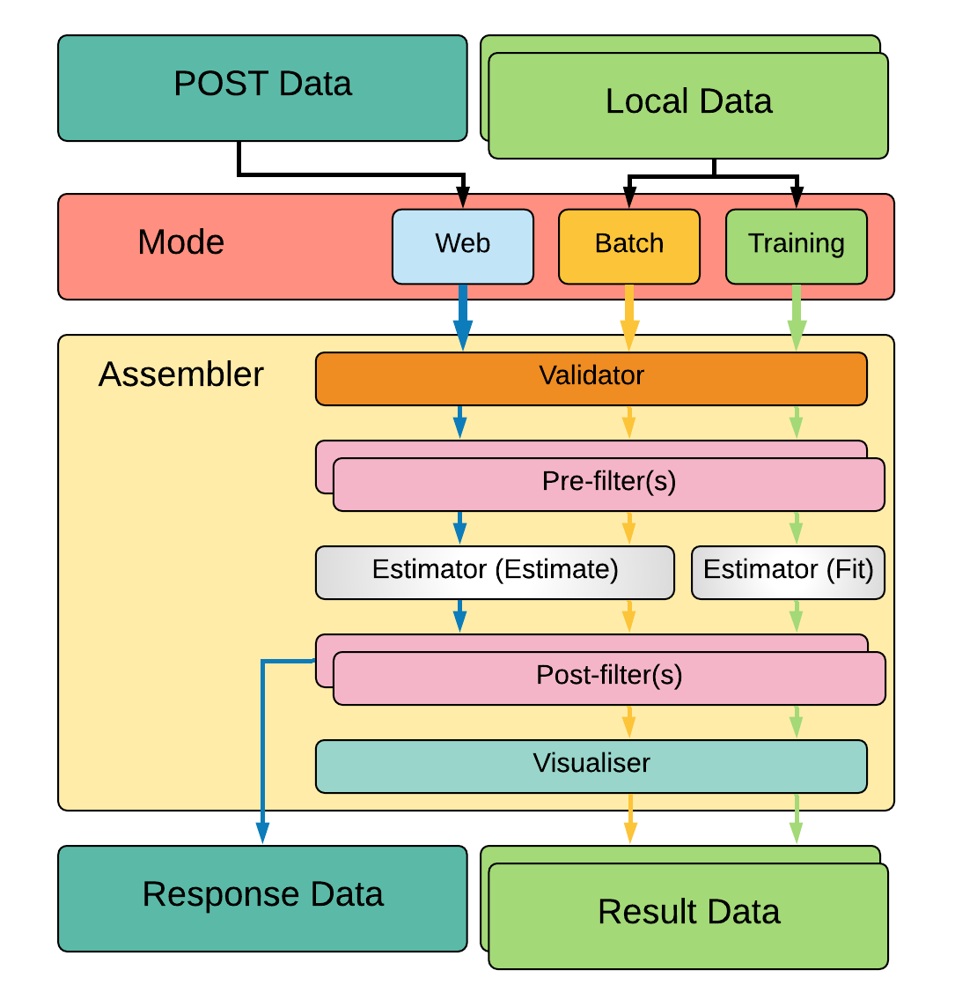

About¶
What is Surround exactly?¶
Surround is an open-source framework developed by the Applied Artificial Intelligence Institute (A2I2) to take machine learning solutions through from exploration all the way to production. For this reason, it is developed with both research engineers and software developers in mind. Designed to play nice with existing machine learning frameworks (Tensorflow, MXNet, PyTorch, etc) and cloud services (Google Cloud AI, SageMaker, Rekognition etc), engineers have the freedom to use whatever necessary to solve their problem.
A Philosophy¶
Surround isn’t just a framework, its also a philosophy. From the moment data lands on our desk we need to be thinking about the final use case for the solutions we are developing. To reduce the amount of time between data exploration and a containerised proof-of-concept web application ready to be deployed, Surround was built to resolve some competing requirements of both researchers and engineers. Where in general researchers want to dive into the data and leave code quality to later, and engineers prefer well structured code from the start. We attempt to solve this problem with Surround by introducing a “production first” mindset and providing conventions for researchers (a separate folder for data exploration scripts).
Long ago, web frameworks realised there are a set of concerns that almost all web applications must deal with, such as connecting to databases, managing configuration, rendering static and dynamic content, and handling security concerns. Machine Learning projets have similar concerns but also have their own set of special concerns such as:
Experimentation is a first class citizen
Data and models need to be versioned and managed
Model performance needs to be visualized
Training infrastructure is required
Etc..
Surround strives to provide a single place for every concern that arises when building a ML project. Ideally there will be a single solution to any concerns that occur to either the research engineer or the software developer. But to be the single place for ML projects we are going to have to support as many existing frameworks, libraries and APIs as we can. This can be seen reflected in the design of Surround where the Core framework could be used to build:
A solution based on cloud APIs
A custom Docker image for SageMaker
Form part of a batch process running on an internal Kubernetes cluster
By playing nice with others we hope the core Surround framework can continue to be used as the ML ecosystem evolves.
A set of conventions¶
Surround attempts to enforce a set of conventions to help researchers keep their solutions structured for software developers and implements solutions for common ML project concepts such as managing configuration so that they don’t have to.
These conventions are adhered to through the use of a project generator and project linter that will check for the core conventions. For example during project generation, the following structure is used:
package name
├── Dockerfile
├── README.md
├── data
├── package name
│ ├── __main__.py
│ ├── config.yaml
│ ├── visualiser.py
│ ├── loader.py
│ └── stage
│ ├── validator.py
│ ├── wrangler.py
│ ├── decider.py
│ └── estimator.py
├── docs
├── dodo.py
├── models
├── notebooks
├── output
├── requirements.txt
├── scripts
├── spikes
└── tests
└── integration.py
Every Surround project has the following characteristics:
Dockerfilefor bundling up the project as a web application.dodo.pyfile containing useful tasks such as train, batch predict and test for a project.Tests for catching training serving skew.
A single entry point for running the application,
main.py.A place for data exploration with Jupyter notebooks and miscellaneous scripts.
A single place, for output files, data, and model storage.
A command line tool¶
Surround also comes with a command line tool (CLI) which can perform a variety of tasks such as project generation and running the project in Docker. The tools included are shown below:
init- Used to generate a new Surround project.lint- Used to run the Surround Linter which checks if Surround conventions are being used correctly.run- Used to run a task defined indodo.pyor starting the web-server.
Where the run command is essentially a wrapper around the doit library and the Surround Linter will perform multiple checks
on the current project to see if it is following standard conventions. The intention of the Surround Linter will to become more
of an assistant when building ML projects. These tools are automatically added to your environment path so they can be used anywhere
in your preferred terminal application.
A Python library¶
The last component of Surround is the Python library. We developed the Python library to provide a flexible way of running a ML pipeline in a variety of situations whether that be from a queue, a http endpoint or from a file system. We found that during development the research engineer often needed to run results from a file, something that is not always needed in a production environment. Surround’s Python library was designed to leverage the conventions outlined above to provide maximum productivity boost to research engineers provided the conventions are followed. Surround also provides wrappers around libraries such as the Tornado web server to provide advanced functionality. These 3rd party dependencies are not installed by default and need to be added to the project before Surround will make the wrappers available.
How does Surround work at its core?¶
At its core, there are four main concepts that you need to understand while using Surround, these are:
The most important being the first two since they make up the actual pipeline that is responsible for taking in data and spitting out a prediction based on that input.
Assembler¶
The Assembler (formerly Surround) is responsible for constructing and executing a pipeline on data. How the pipeline is constructed depends on which execution mode (task) is required. The above diagram describes a simple Surround pipeline showing four different modes of execution. These modes are:
Predict - Used for production, runs the estimator in predict mode, takes some data and just returns the output data.
Batch-predict - Used for evaluation, uses a Loader to run a lot of data through the pipeline, visualizes performance.
Train - Used to train an estimator, loads data using a Loader, configures the estimator to be in
trainmode, visualizes output.Test - Used to test the pipeline in all aspects (prediction and training).
Each coloured line in the figure above is a different sequence of execution, each rectangle are Stages which are executed one at a time by the Assembler during processing. There are multiple different types of stages, these include: Loaders, Validators, Filters, Estimators, and Visualizers.
Stages¶
A stage, at its base, can do three things:
Initialize anything needed to complete its function. This may include a loading a Tensorflow graph or loading configuration data.
Perform its intended operation. Whether that be feeding data through a model or checking if the data is correct.
Dump output from the operation to the console (if requested, used for debugging).
Between each stage, during processing, there are two objects passed between them:
Data object which contains the input data, has a field for errors (which stops the execution when added to) and holds the output of each stage (if any).
Configuration object which contains all the settings loaded in from YAML files plus paths to folders in the project such as
data/andoutput/.
Loaders¶
Loaders are stages that are responsible for batch loading large amounts of data and feeding them through the pipeline. Typically used for both training and evaluation of performance. For example for a Facial Recognition pipeline you may have a large dataset of images that needs to be fed through the pipeline for training. The loading of all those images would take place in a Loader.
Validators¶
Validators are stages that are responsible for checking if the input data that is about to be fed through the pipeline is valid. Meaning is the data the correct format, checking whether there is any detectable reason why the data would cause issues while being processed. This stage is positioned first in the execution of the pipeline (or after Loaders), they are not intended to create any output, only errors or warnings.
Filters¶
Filters are stages that are responsible for getting data ready for the next stage of execution. These are typically placed before or after Estimators. There are generally two types of filters: Wranglers and Deciders.
Wranglers¶
Wranglers perform data wrangling operations on the data. Meaning getting the data from one format into another that is useful
for the next stage (typically an Estimator). For example the input data might be a str formatted in JSON but the estimator
next in the pipeline might only accept a Python dict so a Wrangler would be used to parse the str into a dict.
Deciders¶
Deciders, placed after Estimators, are stages which make descisions based on the output of them. For example in a Voice Activity Detection pipeline, we may have an estimator that outputs confidence values on whether the input audio data was speech or not, you would then place a Decider after which may perform thresholding on the confidence values.
Estimators¶
Estimators are stages where the actual prediction or training of an ML model takes place. Depending on the pipeline configuration the estimator will either use the input data to make a prediction or use the input data as training data. This stage should have some form of output. Typically placed between two Filters during execution. For example you may be using Tensorflow to run your model, so an estimator would be created, which would load the model and create a Tensorflow session during initialization and the session would be ran with the input data during execution of the stage.
In more complex pipelines, these stages may be composed of an entirely separate Surround pipeline (another Assembler instance). Surround is designed this way to allow pipelines as complex as required.
Visualizers¶
Visualizers are stages where they do what their name entails, visualize the data. Typically used during training and evaluation of the model, these stages are used to generate reports on how the model is performing. TODO: GET GOOD EXAMPLE
Configuration¶
Every instance of Assembler has a configuration object constructed from the project’s configuration file. This configuration object is passed between each stage of the pipeline during initialization and execution. The configuration file uses the YAML data-serialization language.
Example configuration file:
pathToModels: ../models
model: hog # 'hog' or 'cnn'
minFaceWidth: 100 # Threshold for the width of a face bounding box in pixels
minFaceHeight: 125 # Threshold for the height of a face bounding box in pixels
useAllFaces: true # If false, only extract encodings for the largest face
imageTooDark: 23 # Threshold for determining if an image is too dark, lower values = darker image
blurryThreshold: 4 # Smaller values indicate a "more" blurry image
gpuDynamicMemoryAllocation: true # If true, Tensorflow will allocate GPU memory on an as-needs basis. perProcessGpuMemoryFraction will have no effect.
perProcessGpuMemoryFraction: 0.5 # Fraction of GPU memory Tensorflow should acquire. Has no effect if gpuDynamicMemoryAllocation is true.
rotateImageModelFile: image-rotator/image-rotator-2018-04-05.pb # Model used to detect the orientation of the image
rotateImageModelLabels: image-rotator/labels.txt # Model used to detect the orientation of the image
rotateImageInputLayer: conv2d_1_input # Tensorflow input layer
rotateImageOutputLayer: activation_5/Softmax # Tensorflow output layer
rotateImageInputHeight: 100 # Input image height to the image stage neural network
rotateImageInputWidth: 100 # Input image width to the image stage neural network
rotateImageThreshold: 0.5 # Rotate image if the orientation is above this threshold
rotateImageSkip: false # Option to skip image rotation step
imageSizeMax: 700 # Maximum allowable image size (width or height). Images larger than this will be downsized.
postgres: # Postgres database options
user: postgres # Postgres username
password: postgres # Postgres password
host: localhost # Postgres server host
port: 5432 # Postgres server port
db: face_recognition # Which database to connect to
webcamStream: # Webcam stream options
drawBox: true # Whether to draw a box around detected faces
minConfidence: 0.5 # Discard detections below this confidence level
highConfidence: 0.9 # Confidence values at or above this level are deemed to be 'highly confident'
celery:
broker: pyamqp://guest@localhost
backend: redis://localhost